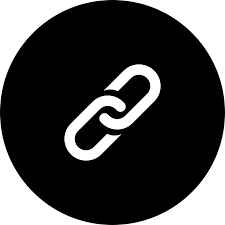

JIDENDIRAN SP
Senior Project Engineer | DevOps & Automation Enthusiast
Summary
Dedicated Infrastructure and DevOps/Automation engineer with 3+ years of experience in designing, automating, and maintaining highperformance IT infrastructure. Skilled in CI/CD pipeline development using Jenkins and Groovy, managing cloud services (Azure ,AWS) and implementing Kubernetes with Argo CD. Expertise in VMware (ESXi, vCenter, vSAN) and storage systems (iSCSI, NAS), with a focus on cloud migrations, security audits, and delivering scalable, secure solutions for critical projects.
Skills
- Linux
- AWS
- Azure
- Windows Server
- Storage Systems
- Kubernetes
- Docker
- Argo-CD
- Git
- Jenkins
- Terraform
- Citrix On-prem & Cloud
- Wasabi Cloud
- VMware vSphere
- Fortinet Firewall
- Sophos Firewall
- SonicWall Firewall
- Switching and Routing
Education
Bachelor of Engineering
Rajiv Gandhi College of Engineering (2016-2020)
Electrical & Electronic Engineering (EEE)
Experience
Senior Project Engineer
Futurenet Technologies India Pvt Ltd, Chennai (Feb 2024 - Present)
- CI/CD Pipelines: Built and automated CI/CD pipelines using Jenkins and Groovy scripts.
- Cloud & Kubernetes: Managed Kubernetes deployments, Argo CD, and AWS services for scalability.
- Security Audits: Performed PASS audits and ensured industry-standard compliance.
- Cloud Migrations: Automated workflows for seamless cloud migrations and hybrid setups.
Project Associate
Futurenet Technologies India Pvt Ltd, Chennai (Aug 2021 - Jan 2024)
- Technical Solutions: Delivered 30+ projects focused on SDI, Hyper-convergence, Cloud, and VMware solutions (ESXi, vCenter, vSAN, vMotion).
- Infrastructure Management: Configured Dell IDRAC, Hypervisors, storage systems (ISCSI, NAS), and Active Directory.
- Automation & Security: Automated tasks with shell scripts, implemented firewall rules, and designed DR solutions (Azure ASR, AWS site-to-site).
- Client Engagement: Provided tailored technical guidance based on customer requirements.
Appreciations
.jpg)
System Engineer (Internship)
V3 Techserv, Chennai (Aug 2020 - Jan 2021)
- Server Management: Installed and configured Linux (LVM) and Windows Servers (AD, file permissions).
- Network & Security: Resolved network issues, implemented firewalls, and created security policies.
- Storage & Virtualization: Deployed Synology NAS, Dell servers (iSCSI), and VMware ESXi setups
- Infrastructure Deployment: Delivered scalable server solutions for optimal performance.
Web Technologies (Internship)
BATL Brewed At The Lab Technologies Pvt Ltd, Chennai (Sept 2018)
- HTML: Gained hands-on experience in structuring web pages using HTML, including understanding the role of elements such as headings, paragraphs, links, images, and forms to create a functional layout.
- CSS: Learned to style web pages using CSS, applying basic styling techniques like adjusting colors, fonts, margins, and padding to improve the visual appeal of websites and make them more user-friendly.
- JavaScript: Gained knowledge of JavaScript fundamentals, writing simple scripts to manipulate the DOM, handle user interactions, and make web pages more dynamic through event listeners and basic functions.
- Web Hosting: Set up and managed basic web hosting environments, understanding how to upload and deploy websites to servers, and ensuring they were accessible to users through domains and proper file management
Certifications
- Microsoft Certified Azure Fundamentals
- Fortinet NSE-1 Network Security Associate
Courses Completed Certificates
- CompTIA A+ (220-1001)
- CompTIA A+ (220-1002)
- CompTIA Network+ (N10-007)
Projects
CI/CD Pipeline for Java-based Application
Summary
Created end-to-end automation of a Java application's deployment Lifecycle, implementing a robust Jenkins-based CI/CD pipeline.
- Key accomplishments include the installation and configuration of essential Jenkins plugins, development of a comprehensive pipeline covering source code management, builds, testing, and deployment
- Installed and configured critical Jenkins plugins (Git, Maven Integration, Pipeline, and Kubernetes Continuous Deploy) to establish a robust CI/CD foundation.
- Worked on problems arising from Build and environment provision issues.
- Implemented Argo CD on the Kubernetes cluster, orchestrating Git repositories for Helm chart tracking
- Developed a Kubernetes manifests file for the Java application, seamlessly integrating it into the Argo CD workflow.
- Successfully integrated Argo CD into the workflow, orchestrating deployments to test and production environments.
- Achieved significant improvements in deployment efficiency, code quality, and overall system resilience.
Multi-node Kubernetes Cluster Creation
Summary
Led the successful implementation of a resilient three-node Kubernetes cluster in the customer's infrastructure, comprising one control plane and two data planes.
- Employed the Kubeadm tool for streamlined cluster bootstrapping, ensuring optimal resource utilization.
- Implemented ContainerD as the preferred container runtime, enhancing efficiency and resource utilization within the Kubernetes environment
- Deployed the Calico plug-in as the Container Network Interface (CNI), ensuring secure and scalable communication among cluster nodes.
- Configured Node Ports to expose applications externally, facilitating seamless interaction with services hosted within the Kubernetes cluster
- Configured Kemp loadbalancer and ingress controller to distribute traffic inside the Kubernetes cluster.
- Authored Kubernetes deployment manifests, providing a standardized and reproducible approach to application deployment.
- Conducted comprehensive knowledge transfer sessions for the IT team, imparting insights into the cluster setup and deployment processes. Facilitated smooth transitions for new deployments and rollovers.